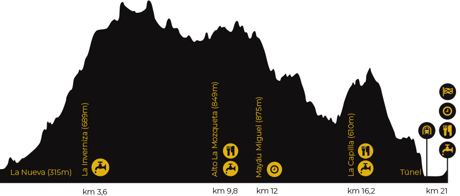
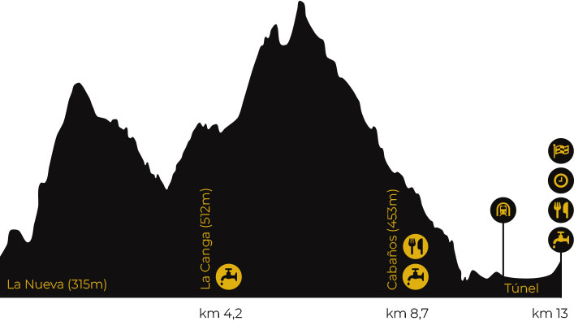

K24
Perfil
Track
Tipos de caminos
Caleyas/caminos/senderos (97%)
Pistas (2%)
Hormigón/asfalto (1%)
Recorrido
Monte y mina juntos en una carrera con dos tipos de terreno bien diferenciados: frondosos bosques habitualmente llenos de barro y resbaladizas raíces y zonas altas de campera sembradas de fuertes repechos.
Comenzaremos el recorrido en el Ecomuseo Minero Valle de Samuño, atravesamos el pueblo de La Nueva, ascendiendo al Barrio'l Planu. A continuación tomaremos la Senda de los Molinos, que nos llevará paralelos al río Samuño hasta el pueblo de El Tendeyón de Abajo. Continuaremos por un bonito bosque hasta El Tendeyón de Arriba, donde 500m de asfalto darán un respiro a los que hayan comenzado demasiado rápido.
Posteriormente, primero por bosque y después por un camino entre cabañas, se llegará a un alto donde se enlazará con el primer tramo mítico de la carrera: El Repechín. Vista abajo y manos a rodillas nos ayudarán a subir hasta el Picu Espines (1006m) donde, si el tiempo acompaña, podremos disfrutar ya de vistas hacia las principales montañas del centro de Asturias: Aramo, Ubiña, Cordillera Cantábrica, Peña Mayor, Redes e incluso los Picos de Europa.
Un estrecho sendero nos llevará en poco tiempo al primer avituallamiento en el Mayáu Porrín, donde comenzará la subida al punto más alto de la carrera y del concejo de Langreo, el pico Cogollu (1017m). A partir de este punto el recorrido transcurre siguiendo la línea de cumbres en un contínuo sube y baja hasta llegar al Alto de la Mozquita, donde se cruza la carretera LA-7 para afrontar el tramo que hemos bautizado como El Repechón, que da acceso a la cumbre del Picu Les Cruces (955m).
Nuevamente se continúa siguiendo el cordal hasta llegar al Mayáu Miguel, donde estará instalado el segundo avituallamiento. Aquí comienza un sendero que pronto se adentra en el bosque y que nos llevará tras un largo trecho y varios cruces de arroyos hasta el pueblo de El Corralón. En este tramo confluyen las dos carreras y ya no se separarán hasta la meta.
Tras un tramo de bajada comenzará la última subida, que nos llevará hasta el Picu Rondiz (740m) pasando por la Cresta los Fugaos, otro de los puntos más llamativos del recorrido.
En el Rondiz se podrá disfrutar de otro avituallamiento antes de lanzarse por un vertiginoso descenso que tendrá una breve pausa (en forma de embarrado llano) al pasar a la altura del pueblo de Pampiedra y se retomará, tras cruzar la carretera LA-8 en El Fresnedal, para afrontar la bajada de La Jaula (nombrada así por su importante pendiente).
Un último descenso por el Plano Tilano nos conducirá a la entrada del Socavón Emilia, piso 1 del Pozo San Luis y que deberemos recorrer durante 1km para llegar al último escollo antes de encarar la recta de meta: 174 escalones que nos devolverán a la luz de la superficie.
Ya sólo queda disfrutar de los últimos metros, estos sí, asfaltados y completamente planos, otra vez en el Ecomuseo Minero Valle de Samuño.
K11
Perfil
Track
Tipos de caminos
Caleyas/caminos/senderos (95%)
Pistas (1%)
Hormigón/asfalto (4%)
Recorrido
Carrera ideal para corredores explosivos y para aquellos que quieran iniciarse en el trail sin prescindir de algo de emoción. De hecho, comparte gran parte de su recorrido con la K24, entre otros algunos de sus tramos ya míticos, como la Cresta los Fugaos, La Jaula y, como no podía ser de otra manera, la galería minera que sirve también de final.
El recorrido parte de La Nueva, ascendiendo al Barrio El Plano, donde se abandona el asfalto para adentrarnos ya en los característicos bosques de la parte baja de este valle.
Al poco se cruzará el río Samuño y se comenzará el ascenso por el Camín de La Texuca hasta El Corralón, entroncando con el recorrido de la K24 para unir varios pueblos del Valle en un recorrido por caminos entre bosques que habitualmente se encuentran aderezados con barro.
Pasado el km5 los corredores tendrán que enfrentarse a la Cresta los Fugaos, uno de los tramos más bonitos (y duros) del recorrido, compuesto por un escarpe de arenisca, que desemboca en La Capilla.
El recorrido continúa cruzando la LA-8 para ascender por un bonito sendero que, por fin, abandonará el bosque, permitiendo disfrutar de amplias vistas de la zona central de Asturias.
Una vez fuera del bosque toca afrontar uno de los repechos más duros de ambas carreras para coronar el Pico Rondiz, de 740m y que sirve de atalaya al Valle del Nalón y toda la montaña central asturiana. Este pico, coronado por una antena, es visible desde la salida, por lo que servirá de referencia durante el ascenso.
A partir de este punto comienza un vertiginoso descenso, primero por camperas para, de nuevo, volver a meterse en otro bosque y llegar a El Fresnedal, pueblo donde comenzará la delicada bajada de La Jaula.
Una vez completado hasta este punto, bastará con descender el Plano Tilano para acceder a la galería minera del Pozo San Luis y cubrir por ella el singular último kilómetro (con sus 174 escalones finales) que nos conducirá a la meta.


{kind=link}
{kind=link}
{kind=link}
{kind=link}
{kind=link}
{kind=link}
{kind=link}
{kind=link}